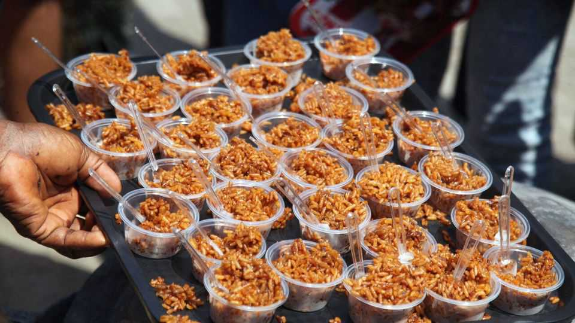
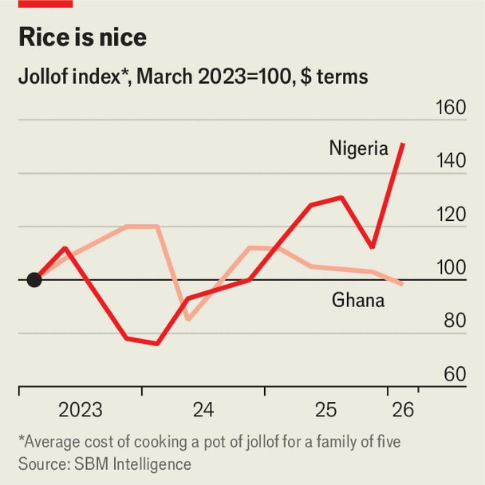

Is the staple meal in Nigeria and Ghana becoming a luxury?
What the rising prices of jollof rice show about Nigeria and Ghana’s economies
June 18th 2026

Nigerians and Ghanaians have a long, lively debate about whose jollof rice is better. (Senegalese thieboudienne, which gave birth to jollof, arguably trumps both.) A more pressing question is whose is cheaper? The Jollof index, issued quarterly by a Lagos-based consultancy called SBM Intelligence, tracks the prices of 12 ingredients used to make the staple in both countries, from the tinned tomato purée that gives the dish its renowned orange hue, to the oil used to sauté the onions and spices.
In both countries ingredient prices have risen during the war over Iran. After the conflict began, in Nigeria, a pot of jollof for a family of five was soon going for n30,435 ($22.4), a whopping 40% of the monthly minimum wage. This 20% jump since October came mostly from diesel costs for the lorries moving tomatoes and peppers from north to south. In Ghana, tomatoes now cost 56% more than before the war; the average price of rice is up by 29%. The cost of cooking gas has risen by 31%, adding to the cost.

But the picture then diverges. In Ghana, where the government has steered a rocky return to single-digit inflation from a peak of 54% in December 2022, this average pot still works out in dollar terms cheaper than it was three years ago. Though its jollof basket depends more on imports, a stronger currency has cushioned families from the worst shocks. But in Nigeria that same pot is up by 50% in dollars terms over the same period. Though headline inflation has slowed over the past year, Nigeria’s bureau of statistics has just noted that prices are up by 16% on last year, the third monthly rise this year.
Most jollof ingredients in Nigeria are farmed locally. But bad roads and weather always cause spikes at this time of year—worsened by the war. Nigeria’s higher rate of food insecurity means that even small, brief price rises can make the difference between someone eating their jollof rice with chicken—or settling for a morsel of smoked fish. For the 140m Nigerians under the poverty line, jollof has long been an unheard-of luxury.■
Sign up to the Analysing Africa, a weekly newsletter that keeps you in the loop about the world’s youngest—and least understood—continent.